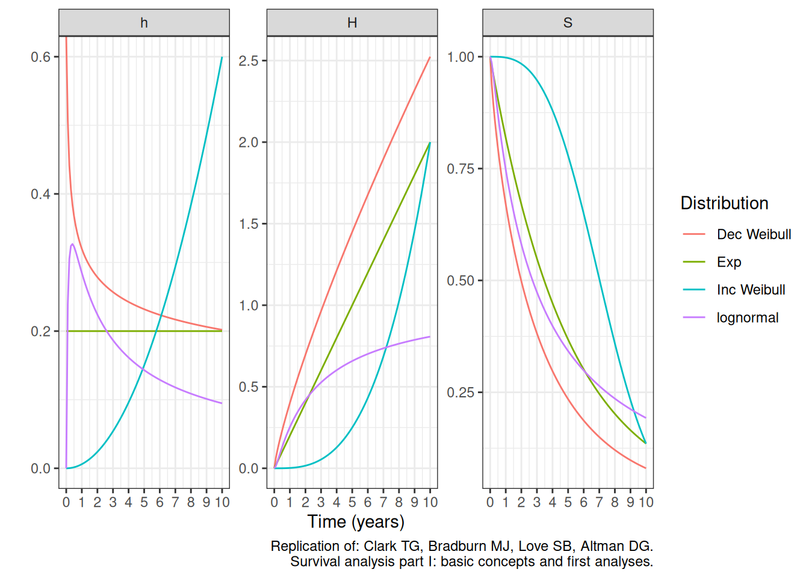
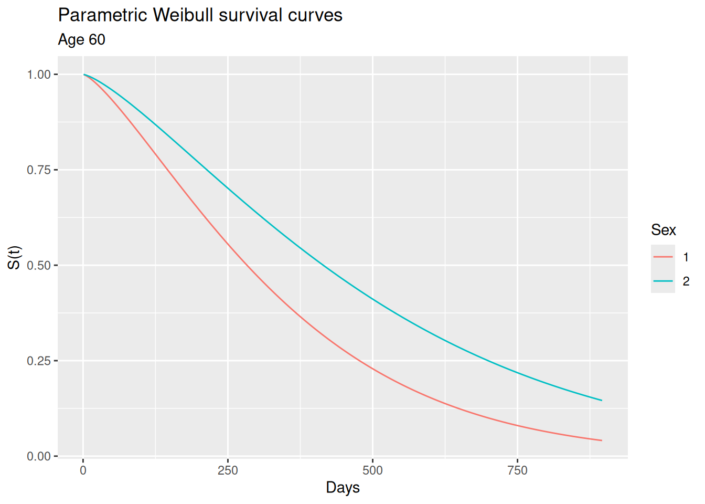

4 Parametric Modelling
Parametric survival modelling makes assumptions about the statistical distribution of survival times. This makes it a more flexible approach, assuming you are able to find a suitable distribution to suit your data.
4.1 Why parametric models?
The Cox proportional hazards model is powerful because it leaves the baseline hazard \(h_0(t)\) unspecified. But this flexibility comes at a cost: the Cox model cannot directly answer questions that require a fully specified hazard function, such as:
- What is the mean survival time?
- What is the expected survival time for a new patient?
- What is the probability of surviving beyond the limits of the empirical data?
- How does the hazard function itself change over time?
The parametric approach also has higher efficiency, so may be preferable with small samples. There is also no need to comply with the proportional hazards assumption.
Parametric survival models address this by assuming that survival times follow a specific probability distribution. If the assumed distribution is a good approximation to reality, parametric models are more efficient (smaller standard errors) and enable richer predictions than the Cox model.
4.2 Common distributions
The key distributions used in parametric survival modelling all describe how the hazard function \(h(t)\) behaves over time.
4.2.1 Exponential
The simplest parametric model. The hazard is constant over time:
\[ h(t) = \lambda \]
This implies no “ageing” — the probability of dying in the next instant is the same regardless of how long the subject has already survived. The survival function is:
\[ S(t) = e^{-\lambda t} \]
4.2.2 Weibull
A generalisation of the exponential that allows for monotone (increasing or decreasing) hazards:
\[ h(t) = \lambda \gamma t^{\gamma - 1} \]
- \(\gamma > 1\): hazard increases over time (e.g. aging-related mortality)
- \(\gamma = 1\): reduces to the exponential (constant hazard)
- \(\gamma < 1\): hazard decreases over time (e.g. early post-operative risk)
The Weibull is the most commonly used parametric survival distribution.
4.2.3 Log-normal
Assumes \(\log(T) \sim \text{Normal}(\mu, \sigma^2)\). The hazard is non-monotone. It rises to a peak and then decreases. This is appropriate when mortality risk initially increases then declines (e.g. surgical recovery).
4.2.4 Summary
| Distribution | Hazard shape | Typical use case |
|---|---|---|
| Exponential | Constant | Simple baselines, memoryless processes |
| Weibull | Monotone (inc. or dec.) | Most common; general-purpose |
| Log-normal | Unimodal (inc. then dec.) | Surgical recovery, infection clearance |
4.3 Parameterisation
Parametric survival models can be written in two equivalent (but differently interpreted) ways.
- Accelerated failure time (AFT) model: Covariates act multiplicatively on time
- Proportional hazards (PH) parameterisation: Covariates act multiplicatively on the hazard
The survreg() function in the survival package uses the AFT parameterisation.
4.3.1 Accelerated Failure Time (AFT) Models
Rather than assume a distribution for t_j the event times directly, lets assume a distributional form of:
\[
\tau_i = \exp{(-\textbf{x}_j\beta_x)}t_j
\]
So now we have an ‘acceleration’ factor of \(\exp{(-\textbf{x}_j\beta_x)}\)
If this value is > 1 then time will pass more quickly, so failure or death would occur sooner, and vice-versa.
Rearranging we get:
\[ t_j = \exp{(\textbf{x}_j\beta_x)} \tau_j \] So we have a form where the coefficients have a multiplicative effect on event times.
We can write:
\[ \ln{(t_j)} = \textbf{x}_j\beta_x + \ln{(\tau_j)} \]
Now we can describe event times \(T\) more generally in this way:
\[
T = \exp{(\beta_0 + \beta_1x)} \times \epsilon
\]
This allows a formulation where time must be positive. Also the error component \(\epsilon\) is conventionally accepted as exponentially distributed.
This can be linearized as:
\[ \log(T) = \beta_0 + \beta_1x + \epsilon^* \]
Where \(\epsilon^* = \ln{\epsilon}\)
This results in the exponential version of the AFT model. If we allow a more general form, with a shape parameter, we can specify Weibull distributions.
\[ \log(T) = \beta_0 + \beta_1x + \sigma \times\epsilon^* \]
4.4 Fitting parametric models with survreg()
survreg() fits AFT models for a range of distributions. The syntax is similar to coxph(), but you specify a dist argument.
# Weibull AFT model on the lung dataset
fit_weibull <- survreg(
Surv(time, status) ~ age + sex,
data = lung,
dist = "weibull"
)
summary(fit_weibull)
Call:
survreg(formula = Surv(time, status) ~ age + sex, data = lung,
dist = "weibull")
Value Std. Error z p
(Intercept) 6.27485 0.48137 13.04 < 2e-16
age -0.01226 0.00696 -1.76 0.0781
sex 0.38209 0.12748 3.00 0.0027
Log(scale) -0.28230 0.06188 -4.56 5.1e-06
Scale= 0.754
Weibull distribution
Loglik(model)= -1147.1 Loglik(intercept only)= -1153.9
Chisq= 13.59 on 2 degrees of freedom, p= 0.0011
Number of Newton-Raphson Iterations: 5
n= 228 The (Intercept) is \(\mu\) (the log-time intercept) and Log(scale) is \(\log(\sigma)\), which is related to the Weibull shape parameter \(\gamma = 1/\sigma\).
4.4.1 Comparing distributions
It is good practice to compare several distributions using AIC or BIC. We fit the same model under four distributions and compare:
dists <- c("weibull", "exponential", "lognormal")
fits <- map(dists, \(d) survreg(
Surv(time, status) ~ age + sex,
data = lung,
dist = d
))
tibble(
distribution = dists,
loglik = map_dbl(fits, logLik),
n_params = map_dbl(fits, \(f) length(coef(f)) + 1),
AIC = map_dbl(fits, AIC),
BIC = map_dbl(fits, BIC)
) |>
arrange(AIC)# A tibble: 3 × 5
distribution loglik n_params AIC BIC
<chr> <dbl> <dbl> <dbl> <dbl>
1 weibull -1147. 4 2302. 2316.
2 exponential -1156. 4 2318. 2328.
3 lognormal -1159. 4 2326. 2339.Lower AIC indicates a better balance of fit and parsimony. The exponential model is nested within the Weibull (\(\sigma = 1\), i.e. \(\gamma = 1\)), so a formal likelihood ratio test is also possible.
4.5 Interpreting coefficients
survreg() returns coefficients on the log-time scale (AFT). Exponentiating gives the time ratio — the multiplicative change in expected survival time per unit increase in the covariate.
A coefficient \(\beta_j > 0\) means covariate \(x_j\) increases survival time — patients live longer. The time ratio \(e^{\beta_j}\) gives the multiplicative factor by which expected survival time changes per unit increase in \(x_j\).
tidy(fit_weibull, conf.int = TRUE) |>
filter(term != "Log(scale)") |>
mutate(
time_ratio = exp(estimate),
tr_conf.low = exp(conf.low),
tr_conf.high = exp(conf.high)
) |>
select(term, estimate, time_ratio, tr_conf.low, tr_conf.high, p.value)# A tibble: 3 × 6
term estimate time_ratio tr_conf.low tr_conf.high p.value
<chr> <dbl> <dbl> <dbl> <dbl> <dbl>
1 (Intercept) 6.27 531. 207. 1364. 7.69e-39
2 age -0.0123 0.988 0.974 1.00 7.81e- 2
3 sex 0.382 1.47 1.14 1.88 2.72e- 3
AFT vs HR interpretation
A time ratio of 0.8 for a covariate means that subjects with one extra unit of that covariate have survival times that are, on average, 20% shorter. A hazard ratio > 1 means increased hazard (worse survival); a time ratio < 1 also means shorter survival. Both encode the same relationship, but on different scales.
4.6 Survival curves from parametric models
Because the full distribution is specified, we can predict smooth survival curves at any covariate pattern.
new_patients <- expand_grid(
time = seq(1, 900, by = 5),
age = c(60, 60),
sex = c(1, 2) # 1 = male, 2 = female
)
new_patients |>
mutate(
lp = predict(fit_weibull, newdata = new_patients, type = "lp"),
surv = 1 - pweibull(time, shape = 1 / fit_weibull$scale, scale = exp(lp))
) |>
ggplot(aes(time, surv, colour = factor(sex))) +
geom_line() +
labs(
x = "Days",
y = "S(t)",
colour = "Sex",
title = "Parametric Weibull survival curves",
subtitle = "Age 60"
)